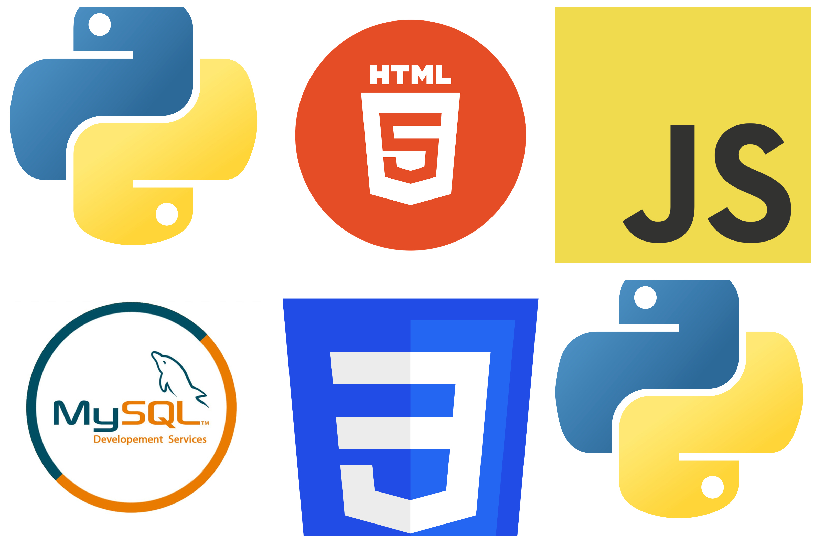

When I was in my 7th grade I got my first computer I was very fond of tech from the very begining but when I got my computer it was
one day while playing video game A thought came into my mind "Why cant I came games of my own!!!"
I will have a blank canvas in which I can write whatever I want I felt that freedom
I watched youtube videos and learned coding in Unity that is when I learned c#
Benifits : got introduced to programing world
: Learned c#
Best YouTube Channel for game dev in Unity : Brakeys

Started getting official records of progress
Now I knew what programming was and I had thought of making it my carrer so I started working on it and took Computer science classes in my high school.
I also did some learning outside my class I learned HTML and CSS using online learnign platforms like edx and coursera when I was in my 9th or 10th grade.
Now I was eligible to take computer science classes in my high school so I took C.S in y 11 th grade and my 12th grade at that time I learned python and SQl
Not only this I learned theoretical conecepts like networking and just if I forgot to mention I stoped using windows when I was in my 10th grade and started Linux
I know this list is getting too big but I learned javascript while I was in my high school
Benifits : advanced in this programming word
: Learned HTML,CSS,Python,SQL,Networking,Javascript
Came to USA and Enrolled in IWU
I completed My high school and now it was time for college and to advance my carrer by gaining practicle knowledge not just theoretical knowledge I came to IWU
I enrolled here as a computer science but I also wanted to get enrolled in engineering pathway so with the hep of my advisors I did so.
I am currently taking : Computational Discrete Mathematics(CS 136) which is a sophomore level course in which we learn about computational maths.
Physics 105 , Calculus 176 and also by the end of this spring semester I would complete computer science in which we learn C++
I am also trying to learn AWS right now